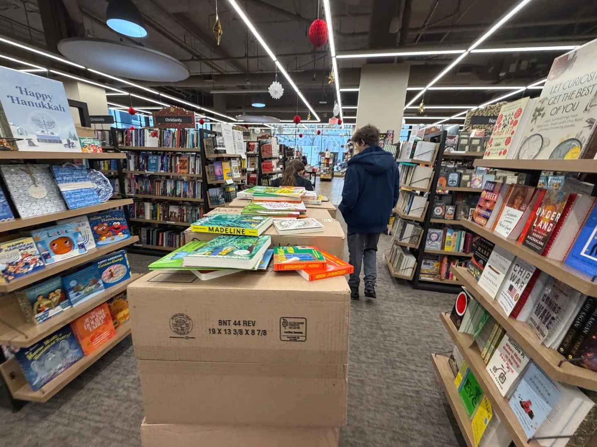
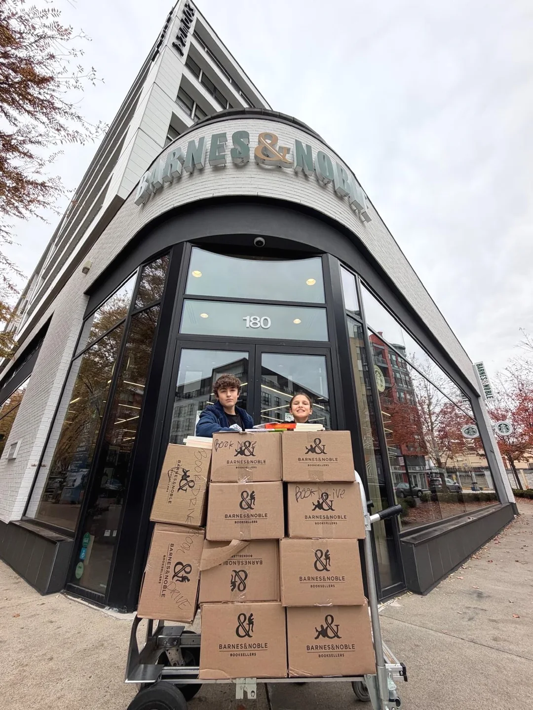

The Lemonade Society
A book club that reads together and shares books with young readers.
Charlotte and Hendrik co-founded The Lemonade Society in the Washington, DC area. It’s part of The LiTEArary Society, Inc., which helps preschool-age children in underserved communities discover a love of books.
At book club, members read and talk about books, make things, and choose and prepare new books to donate. A parent or caregiver supervises each meeting.
Visit The Lemonade Society’s page
Packing and pickup

